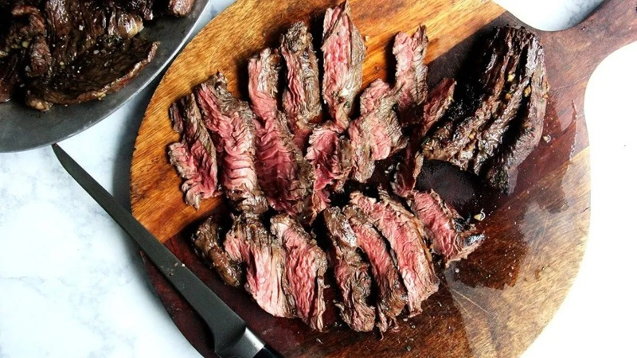
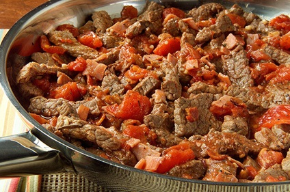
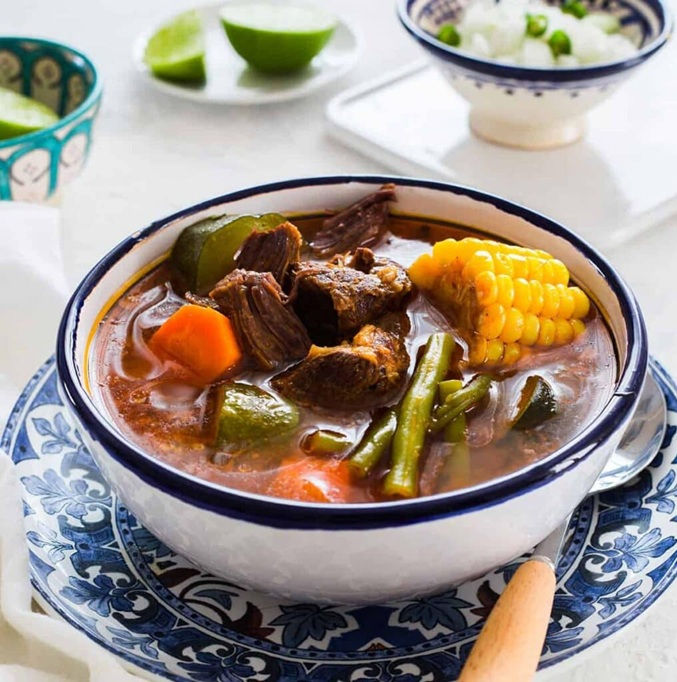

Asado de Arrachera Marinada
Ideal para tus reuniones. Utiliza nuestra arrachera especial, acompáñala con cebollas cambray y nopales asados.
ParrilladaSaca el máximo provecho a nuestros productos con estas deliciosas ideas.

Ideal para tus reuniones. Utiliza nuestra arrachera especial, acompáñala con cebollas cambray y nopales asados.
Parrillada
Preparado con nuestro bistec de diezmillo picado. Un clásico que resalta el sabor de la carne fresca.
Guisado
Utiliza chambarete y retazo con hueso para un sabor intenso. Cocina a fuego lento con verduras frescas.
Cocina Tradicional